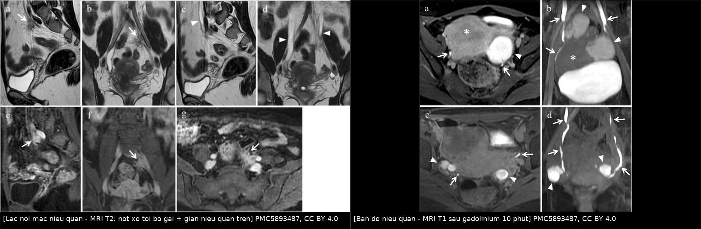
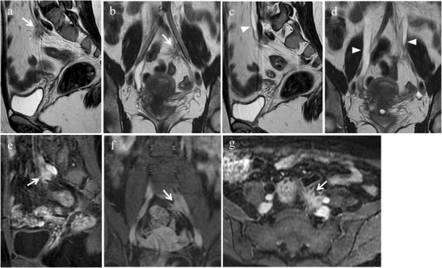
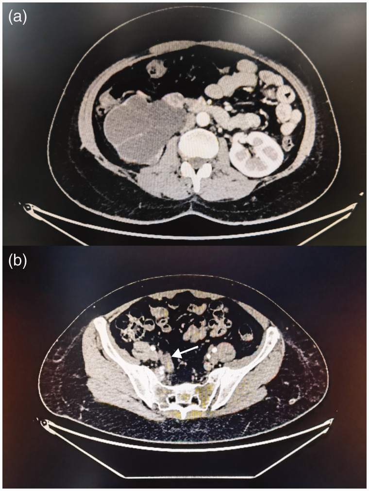
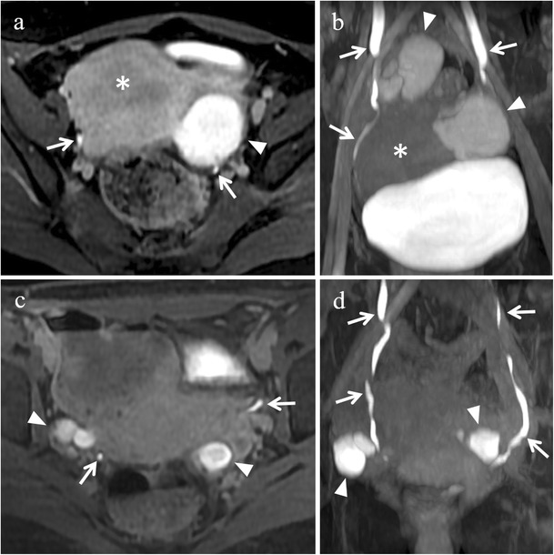

1661 — Lạc nội mạc tử cung niệu quản: ứ nước thận im lặng / Ureteral endometriosis
Tags: pattern:u-nuoc-than pattern:hep-nieu-quan pattern:not-xo pattern:tang-sinh-mach vung:nieu-quan vung:tieu-khung vung:than score:split-renal-function protocol:MRI-tieu-khung protocol:CT-urography protocol:stent-nieu-quan incidentaloma:u-nuoc-than
Mức chắc chắn (certainty): tổng hợp y văn (literature synthesis) — dựa trên 1 đoàn hệ 74 ca có theo dõi trung vị 9 năm (PMC13637158), 1 bài tổng quan MRI–mô bệnh có ảnh (PMC5893487) và 5 ca nguyên văn có ảnh/số liệu (PMC11869247, PMC13379677, PMC12506785, PMC11350447, PMC4899875). Câu nào là suy luận từ bằng chứng gián tiếp được ghi [suy luận].
1. Tổng quan bệnh học – cơ chế hình ảnh
- Định nghĩa: lạc nội mạc tử cung niệu quản (ureteral endometriosis, UE) là mọi tình trạng mô nội mạc tử cung hoặc mô xơ đi kèm chèn ép/làm biến dạng niệu quản — kể cả khi chưa có ứ nước (PMC5893487). Đây là lý do "niệu quản bình thường trên CT" không loại trừ bệnh ở giai đoạn sớm.
- Vì sao hiếm mà vẫn nguy hiểm: đường niệu–sinh dục chiếm tới 20% các ca lạc nội mạc sâu (deep infiltrating endometriosis, DIE), trong đó bàng quang 85% · niệu quản 9% · thận 4% · niệu đạo 2% (PMC5893487). Riêng niệu quản chỉ chiếm 0,01–1% tổng số lạc nội mạc, nhưng trong quần thể DIE lại tới 10–48% (PMC13637158; PMC5893487). UE chiếm khoảng 5% lạc nội mạc đường niệu (PMC11350447).
- Hai thể mô bệnh — quyết định cách mổ:
- Ngoại lai (extrinsic, ~80–82,4%): mô lạc nội mạc xâm lấn adventitia niệu quản rồi xơ hóa bóp từ ngoài vào. Đoàn hệ 74 ca: 82,4% ngoại lai, 17,6% nội lai (PMC13637158).
- Nội lai (intrinsic, ~18–20%): xâm lấn lớp cơ niệu quản, có thể loét niêm mạc → khó tách, dễ tái hẹp sau bóc. Cả 13/13 tổn thương nội lai trong đoàn hệ đều phải cắt đoạn–nối (p < 0,001).
- TẠI SAO nốt có T2 tối: mô xơ (collagen) và cơ trơn chiếm phần lớn nốt, ít proton linh động → T2 ngắn, tín hiệu thấp; bờ gai (spiculated) vì sợi xơ kéo vào mỡ quanh niệu quản. Ổ xuất huyết cũ (hemosiderin/methemoglobin) tạo điểm T1 cao và T2 trống tín hiệu*. Phần tuyến và mô đệm có mạch ngấm thuốc → ngấm thuốc sau tiêm trên T1 fat-sat (PMC5893487, Fig. 10).
- TẠI SAO ứ nước mà bệnh nhân "không biết": tắc tiến triển từ từ nên bể thận – đài thận giãn trước (Laplace: sức căng thành ∝ áp lực × bán kính), áp lực truyền vào nhu mô tăng chậm; thận đối bên bù hoàn toàn. Hệ quả là nửa số ca không có triệu chứng niệu, creatinine có thể bình thường. Đoàn hệ 74 ca: chỉ 25,7% có triệu chứng niệu (tiểu nhiều, tiểu buốt, tiểu khó, đái máu); 39,2% đau lưng/hông/mặt sau đùi (PMC13637158).
- Ngưỡng định lượng về mất chức năng thận (đọc kỹ — đây là điểm chết người):
- Chụp nhấp nháy thận trước mổ ở 45/74 ca: 68,9% có giảm chức năng thận từng bên, chia giảm nhẹ 32,3% · vừa 29,0% · nặng 22,6% · mất chức năng 16,1% (PMC13637158).
- Phân độ theo GFR một bên: bình thường ≥ 40 mL/phút/1,73 m²; giảm nhẹ 30–40; vừa 20–30; nặng 10–20; mất chức năng < 10 (tiêu chuẩn của nhóm tác giả, PMC13637158).
- Ứ nước/niệu quản giãn gặp ở 10,8–54,4% ca UE (PMC13637158 dẫn y văn).
- Số liệu hình thái từ đoàn hệ 74 ca: niệu quản trái 37,8% · phải 43,2% · hai bên 18,9%; đoạn xa 86,5%, giữa 13,5%; 75,7% có endometrioma kèm (trong đó 85,7% cùng bên); 82,4% có DIE ở vị trí khác; 64,9% có adenomyosis; tất cả đều FIGO/ASRM độ IV, điểm ASRM trung vị 68.
- Số liệu ca nguyên văn (dùng cho quiz):
- Nữ 39 tuổi, đau hông phải tái diễn, ứ nước–niệu quản phải + endometrioma phải; soi niệu quản không thực hiện được vì lỗ niệu quản hẹp nhiều; xạ hình thận: thận phải mất chức năng, thận trái còn tốt → cắt thận–niệu quản phải + cắt bán phần bàng quang + cắt phần phụ phải; mô bệnh hỗn hợp nội lai + ngoại lai, viêm thận mạn giai đoạn cuối (PMC13379677).
- Nữ 35 tuổi, đau hông phải 4 năm + đái máu đại thể; thận trái đã mất chức năng 4 năm mà không triệu chứng, phát hiện tình cờ; sau đó thận phải ứ nước tái diễn buộc đặt stent rồi cấy lại niệu quản (PMC12506785).
- Bệnh nhân "ngoài 50 tuổi": ứ nước phải nặng + nốt mô mềm 1,2 × 2,1 × 2,4 cm ở mức S1/S2, chẩn đoán ban đầu là u niệu quản, chỉ sau mổ mới ra lạc nội mạc (PMC11869247).
2. Mẫu hình + chẩn đoán phân biệt theo VỊ TRÍ (Gamut)
Mẫu hình là "nốt xơ quanh niệu quản + giãn niệu quản–bể thận phía trên". Việc đầu tiên: xác định mức tắc rồi mới đo độ giãn.
- Theo đoạn niệu quản:
- Đoạn xa, 3–4 cm trên lỗ niệu quản — vị trí hay gặp nhất (86,5% đoàn hệ 74 ca; PMC5893487). Thường kèm DIE dây chằng tử cung–cùng, vách trực tràng–âm đạo, endometrioma cùng bên.
- Đoạn giữa — hiếm hơn (13,5%), dễ nhầm với xơ hóa sau phúc mạc hoặc hạch.
- Khúc nối bể thận–niệu quản (UPJ) — hiếm; nếu chỉ thấy ứ nước không thấy nốt, phải nghĩ nguyên nhân khác.
- Theo cơ chế chèn ép:
- Từ ngoài (extrinsic): nốt DIE bóp/dính niệu quản — đa số.
- Trong thành (intrinsic): mô lạc nội mạc trong lớp cơ → dày thành, hẹp lòng, dễ chảy máu niêm mạc.
- Xơ hóa đơn thuần (fibrotic pattern ~23%): chỉ có xơ, không thấy tuyến — không đáp ứng nội tiết, phải mổ (PMC5893487 dẫn Seracchioli 77 ca).
- Gamut của "nốt quanh niệu quản + ứ nước" (theo thứ tự cần loại trừ):
- Ung thư biểu mô niệu mạc (urothelial carcinoma) — tổn thương trong lòng, bờ không đều, ngấm thuốc, thường ở người lớn tuổi/hút thuốc.
- Ung thư cổ tử cung xâm lấn niệu quản — khối cổ tử cung + thâm nhiễm dây chằng rộng, hẹp niệu quản một đoạn dài (đây là phân biệt chính mà PMC5893487 nêu).
- Xơ hóa sau phúc mạc (retroperitoneal fibrosis) — dải xơ bao cả hai niệu quản, kéo trung thất, thường ở ngang mức động mạch chủ; không có ổ xuất huyết T1 cao.
- Hẹp do xạ trị tiểu khung — tiền sử xạ, hẹp dài, nhẵn, không có nốt ngấm thuốc dạng gai.
- Sỏi niệu quản — cản quang > 200 HU, không có nốt mô mềm.
- Tổn thương do can thiệp (thắt/buộc niệu quản sau mổ phụ khoa) — biến chứng niệu khoa hay gặp nhất của mổ tiểu khung, 1–10% (PMC5893487).
- Lạc nội mạc hóa ung thư (endometriosis-associated carcinoma) — hiếm; khối lớn, ngấm thuốc mạnh, phá vỡ cấu trúc (PMC6590549).
- Lạc nội mạc ở hậu mãn kinh — vẫn xảy ra, thường im lặng, hay bị bỏ qua (PMC4899875).
- Gợi nhớ theo tầng: nốt + giãn trên nốt + không có tổn thương trong lòng → nghĩ lạc nội mạc; tổn thương trong lòng/niêm mạc → nghĩ ung thư niệu mạc; hẹp dài hai bên → nghĩ xơ hóa sau phúc mạc hoặc xạ.
3. Bảng so sánh phân biệt (ma trận đối chiếu)
| Thực thể (entity) | Hình ảnh điển hình (MRI/CT) | Chốt vào (rule-in) | Chốt loại (rule-out) | Gợi ý xác nhận |
|---|---|---|---|---|
| Lạc nội mạc niệu quản ngoại lai | Nốt T2 rất tối, bờ gai, bao quanh niệu quản; giãn niệu quản ngay trên nốt; ngấm thuốc sau tiêm; ± điểm T1 cao do xuất huyết | Nốt T2 tối bờ gai + giãn trên nốt + endometrioma/DIE cùng bên | Niêm mạc niệu quản nguyên vẹn, không có tổn thương trong lòng | MRI T2 lát mỏng 3 mm + T1 fat-sat + T1 sau gadolinium |
| Lạc nội mạc nội lai | Dày thành niệu quản từng đoạn, lòng hẹp, có thể thấy điểm T1 cao trong thành; niêm mạc có thể loét | Dày thành + hẹp lòng + có máu cũ trong thành | Khối ngoài thành đơn thuần, thành mỏng đều → ngoại lai | Soi niệu quản + sinh thiết; cắt đoạn nếu không tái thông |
| Ung thư biểu mô niệu mạc | Khối trong lòng niệu quản, bờ không đều, ngấm thuốc; ± hạch; thường không có DIE | Tổn thương trong lòng + bờ không đều + hạch | Nốt ngoài thành, niêm mạc trơn → nghĩ lạc nội mạc | CT urography thì bài tiết; nội soi + tế bào học |
| Ung thư cổ tử cung xâm lấn | Khối cổ tử cung lớn, thâm nhiễm dây chằng rộng, hẹp niệu quản một đoạn dài, có hạch chậu | Khối cổ tử cung nguyên phát + hẹp dài + hạch | Cổ tử cung bình thường, chỉ có nốt khu trú → không phải | MRI tiểu khung có tiêm; sinh thiết cổ tử cung |
| Xơ hóa sau phúc mạc | Dải/tấm xơ T2 tối, bao hai niệu quản, dọc trục ĐMC–chậu, có thể kéo niệu quản vào trong | Bao hai bên + dọc ĐMC + không có ổ T1 cao | Tổn thương khu trú một bên, có endometrioma → nghĩ lạc nội mạc | CT bụng–chậu; MRI; sinh thiết khi không điển hình |
| Hẹp do xạ trị | Hẹp dài, nhẵn, thành dày đều, không có nốt ngấm thuốc; mỡ quanh niệu quản xơ | Tiền sử xạ đúng trường chiếu + hẹp dài nhẵn | Có nốt bờ gai ngấm thuốc → không phải xạ đơn thuần | So sánh bản đồ xạ trị; CT urography |
| Sỏi niệu quản | Nốt cản quang > 200 HU, ± dấu viền mô mềm; không có nốt mô mềm | Cản quang cao + ứ nước cùng bên | Không thấy sỏi, có nốt mô mềm T2 tối → không phải sỏi | CT không cản quang lát mỏng 1–3 mm |
| Lạc nội mạc hóa ung thư | Khối lớn, ngấm thuốc mạnh, phá vỡ thành niệu quản, có thể xâm lấn mỡ/tạng lân cận | Khối phá cấu trúc + ngấm mạnh không đồng nhất | Nốt nhỏ, bờ gai, ngấm thuốc ít → lành tính | Sinh thiết/mổ; hóa mô miễn dịch |

Trái: MRI T2 — nốt ngoài phúc mạc T2 tối, bờ gai (mũi tên trắng) sát mạch chậu trái, kèm giãn niệu quản phía trên (đầu mũi tên); các ô (e–g) là T1 fat-sat sau tiêm: nốt ngấm thuốc. Phải: MRI T1 fat-sat sau gadolinium ~10 phút — niệu quản ngấm thuốc (mũi tên) dùng để vẽ đường đi niệu quản trước mổ. Nguồn: PMC5893487 (CC BY 4.0), ảnh ghép letterbox giữ nguyên tỷ lệ.4. Protocol chụp + ngưỡng xử trí
4.1 Chụp gì, theo thứ tự nào
- Siêu âm thận – đường tiết niệu (đầu tiên, rẻ, không bức xạ): đo đường kính trước–sau bể thận, độ dày nhu mô, so hai bên. Trong đoàn hệ 74 ca, siêu âm đo được niệu quản rộng 1,0 cm (0,7–1,2) và bể thận 1,6 cm (1,2–2,3) (PMC13637158).
- MRI tiểu khung (chuẩn vàng để đánh giá DIE và niệu quản — PMC5893487):
- T2 độ phân giải cao, lát 3 mm, mặt phẳng axial/oblique và coronal: tìm nốt T2 tối bờ gai dọc niệu quản, đo kích thước 3 chiều và khoảng cách tới lỗ niệu quản.
- T1 fat-sat: điểm T1 cao = ổ xuất huyết cũ.
- T1 fat-sat sau gadolinium, chụp muộn ~10 phút: niệu quản ngấm thuốc giúp vẽ đường niệu quản và đo khoảng cách nốt–lỗ niệu quản (PMC5893487). Với bể thận giãn, chụp thì niệu đồ ở tư thế nằm sấp.
- Bàng quang căng vừa khi chụp: bàng quang quá căng che các ngách, quá rỗng không thấy niệu quản.
- CT urography (có thì bài tiết) khi cần đánh giá giải phẫu – mức tắc và loại trừ sỏi/u niệu mạc; lát 1–3 mm. Trong đoàn hệ, 85,1% bệnh nhân được đặt stent Double-J trước hoặc trong mổ.
- Xạ hình thận (MAG3/DMSA) — bắt buộc trước khi quyết định cắt thận: cho chức năng thận từng bên. Đây là xét nghiệm phân tầng mất chức năng (16,1% mất chức năng trong 45 ca được đo).
- Xét nghiệm: creatinine/eGFR, tổng phân tích nước tiểu (đái máu vi thể), CA-125 (theo dõi bệnh, không dùng để chẩn đoán).
4.2 Ngưỡng và lựa chọn phẫu thuật
- Bóc dính – lấy nốt, giữ niệu quản (ureterolysis + nodule excision) là lựa chọn đầu cho đa số: 73% (54/74) trong đoàn hệ; tái phát ứ nước 7,4% (4/54, trung vị 15 tháng, 12–24 tháng), rò niệu quản 1,9% (1/54) ở theo dõi trung vị 9 năm.
- Cắt đoạn niệu quản – nối lại (segmental ureterectomy + ureteroneocystostomy/ureteroureterostomy): dành cho tổn thương nội lai, đã mổ lạc nội mạc trước đó (OR 4,413; KTC 1,138–17,108), đặt stent trước mổ thất bại (OR 7,833; KTC 1,946–31,522). Nhóm này không tái phát, không biến chứng trong đoàn hệ, nhưng mổ dài hơn (175 vs 120 phút) và nằm viện lâu hơn (14 vs 6 ngày).
- Stent thất bại không phải "thủ thuật hỏng" mà là dấu hiệu niệu quản bị biến dạng nặng → nên chuẩn bị phương án cắt đoạn.
- Rút stent sau 3 tháng, siêu âm niệu trước và sau rút; theo dõi 3 tháng/lần trong năm đầu rồi 6 tháng/lần đến 2 năm, sau đó hằng năm (lịch của đoàn hệ).
- Nội tiết đơn thuần không đủ khi có xơ hóa/tắc: mô xơ không đáp ứng hormone, và tắc kéo dài làm mất thận không hồi phục. Hormone dùng hỗ trợ sau mổ (GnRHa, dienogest, LNG-IUS) — 4 ca tái phát trong đoàn hệ đều được xử trí bằng stent ± nội tiết.
- Cắt thận chỉ khi thận đã mất chức năng (GFR < 10 mL/phút) và/hoặc có biến chứng (nhiễm trùng, đau không kiểm soát, tăng huyết áp do thận) — như ca PMC13379677 và PMC11869247.
4.3 Sơ đồ quyết định
flowchart TD
A[Nữ đau hông/ứ nước thận + có lạc nội mạc sâu] --> B[Siêu âm thận + MRI tiểu khung T2/T1 fat-sat]
B --> C{Có nốt T2 tối bờ gai quanh niệu quản?}
C -->|Không| D[Loại trừ sỏi, u niệu mạc, xơ hóa sau phúc mạc, hẹp do xạ]
C -->|Có| E[Xạ hình thận: chức năng từng bên]
E --> F{Thận còn chức năng?}
F -->|Không, GFR dưới 10| G[Cắt thận–niệu quản + điều trị lạc nội mạc]
F -->|Còn| H{Nội lai, đã mổ lạc nội mạc, stent thất bại?}
H -->|Không| I[Bóc dính + lấy nốt, giữ niệu quản]
H -->|Có| J[Cắt đoạn + cấy lại niệu quản]
I --> K[Stent 3 tháng + nội tiết hỗ trợ + siêu âm định kỳ]
J --> K
K --> L[Tái phát ứ nước 7,4% sau bóc dính, trung vị 15 tháng]
5. Biến thể bình thường và cạm bẫy
- "Creatinine bình thường = thận ổn" là cạm bẫy chết người: thận đối bên bù hoàn toàn nên xét nghiệm máu bình thường dù một thận đã mất chức năng (ca PMC12506785: thận trái mất chức năng 4 năm, không triệu chứng). Phải có xạ hình thận khi đã xác định UE.
- Chẩn đoán nhầm thành u niệu quản: nốt mô mềm 1,2 × 2,1 × 2,4 cm ở mức S1/S2 trên CT của ca PMC11869247 bị đọc là u, dẫn tới cắt thận–niệu quản. Nốt lạc nội mạc T2 rất tối và bờ gai, khác u niệu mạc (trong lòng, ngấm thuốc); nếu nghi ngờ, MRI trước khi quyết định cắt tạng.
- Bỏ sót tổn thương hai bên: 10–20% ca UE có tổn thương hai bên (PMC5893487); đoàn hệ 74 ca là 18,9%. Luôn đánh giá cả hai niệu quản và cả hai thận trên cùng một lần chụp.
- Hậu mãn kinh không loại trừ: vẫn có ca lạc nội mạc niệu quản ở phụ nữ đã mãn kinh, biểu hiện bằng mất chức năng thận im lặng (PMC4899875).
- Bỏ sót DIE đi kèm: 82,4% ca có DIE ở vị trí khác, 75,7% có endometrioma; chỉ nhìn niệu quản mà bỏ dây chằng tử cung–cùng/vách trực tràng–âm đạo là mổ không triệt để → tái phát.
- Cạm bẫy mặt cắt: trên CT/MRI axial, niệu quản đi trước động mạch chậu ở bờ tiểu khung, ngoài tĩnh mạch sinh dục; muốn chứng minh mức tắc phải lần theo niệu quản trên chuỗi lát từ thận xuống, không đoán theo một lát. Nang cạnh bể thận và bể thận ngoài xoang là hai "bản sao" hay đọc nhầm thành ứ nước.
- Rủi ro khi mổ: tổn thương niệu quản là biến chứng niệu khoa hay gặp nhất của mổ phụ khoa, 1–10%; với UE đã xơ hóa, nguy cơ còn cao hơn → luôn có bản đồ niệu quản trước mổ.
6. Tự lượng giá — Blind Quiz
Ca 1 — Nữ 35 tuổi, đau bụng dưới – đau lưng chu kỳ, nhiều ổ lạc nội mạc sâu. Xem 2 mặt phẳng T2 trước.

- Câu hỏi: (1) Nốt nằm ở đâu, tín hiệu gì? (2) Vì sao có giãn niệu quản? (3) Ba chẩn đoán phân biệt? (4) Cần thêm chuỗi xung nào để quyết định mổ?
Bấm để hiện đáp án (findings + chẩn đoán)
- Dấu hiệu: (a) sagittal và (b) coronal T2 — nốt đặc ngoài phúc mạc, tín hiệu thấp, bờ gai (mũi tên trắng), sát mạch chậu trái. (c, d) T2 — giãn niệu quản phía trên và cả niệu quản đối bên (đầu mũi tên trắng).
- Vì sao giãn: nốt xơ bao quanh niệu quản → hẹp lòng → ứ nước – niệu quản phía trên.
- Chẩn đoán: lạc nội mạc tử cung niệu quản (thể ngoại lai) trong bệnh cảnh DIE đa ổ.
- Chuỗi xung cần thêm: T1 fat-sat (tìm ổ xuất huyết T1 cao) và T1 fat-sat sau gadolinium ~10 phút — các ô (e–g) cho thấy nốt ngấm thuốc, đồng thời thấy rõ đường niệu quản để đo khoảng cách tới lỗ niệu quản trước mổ.
- Nguồn: PMC5893487, Fig. 10 (CC BY 4.0).
Ca 2 — Bệnh nhân "ngoài 50 tuổi", đau lưng trái, CT có cản quang vì nghi u niệu quản.

- Câu hỏi: (1) Mô tả (a) và (b). (2) Vì sao ban đầu nghĩ u niệu quản? (3) Dấu hiệu nào trên MRI giúp phân biệt? (4) Điều gì quyết định cắt thận hay giữ thận?
Bấm để hiện đáp án (findings + chẩn đoán)
- (a) thận phải ứ nước rất nặng, nhu mô mỏng, bể thận – đài thận giãn; thận trái bình thường. (b) nốt mô mềm 1,2 × 2,1 × 2,4 cm ở mức S1/S2 (mũi tên) làm hẹp niệu quản.
- Vì sao nghĩ u: nốt mô mềm khu trú + ứ nước trên + không có tiền sử lạc nội mạc điển hình → hình ảnh giống u niệu quản.
- MRI giúp phân biệt: nốt lạc nội mạc T2 rất tối, bờ gai, bao quanh niệu quản, có thể có điểm T1 cao; u niệu mạc là tổn thương trong lòng, ngấm thuốc, bờ không đều.
- Quyết định: nếu thận đã mất chức năng (GFR < 10 mL/phút) và bệnh nhân có triệu chứng → cắt thận–niệu quản; nếu còn chức năng → bóc nốt/cắt đoạn – cấy lại niệu quản để giữ thận.
- Nguồn: PMC11869247, Fig. 1 (CC BY-NC).
Ca 3 — Cùng bệnh nhân ca 1: vì sao phải tiêm gadolinium và chụp muộn?

- Câu hỏi: Cấu trúc tăng tín hiệu hình ống là gì? Nó giúp gì cho phẫu thuật viên?
Bấm để hiện đáp án
- Cấu trúc tăng tín hiệu hình ống là niệu quản chứa nước tiểu có gadolinium (thuốc bài tiết qua thận), thấy rõ trên T1 fat-sat chụp muộn ~10 phút; coronal MIP cho hình ảnh toàn chiều dài.
- Giá trị: vẽ đường đi niệu quản và tương quan với endometrioma/ổ DIE — giúp tránh tổn thương niệu quản do mổ (1–10%) và lập kế hoạch bóc nốt hay cắt đoạn.
- Nguồn: PMC5893487, Fig. 2 (CC BY 4.0).
Bài liên quan chéo
- 1620 – Ứ nước thận & urinoma do khối tiểu khung lành tính ở nữ
- 531 – U xơ cổ tử cung, u xơ ký sinh & u xơ dây chằng rộng
- 582 – Biến chứng tiêu hóa–niệu sau xạ trị phụ khoa
- 564 – Rò bàng quang–âm đạo & rò niệu quản–âm đạo sau mổ phụ khoa
- 500 – Tổng quan hệ Vú & Sản Phụ khoa
- 1657 – Dị dạng động–tĩnh mạch tử cung
Không dùng để chẩn đoán độc lập khi chưa có người hướng dẫn.